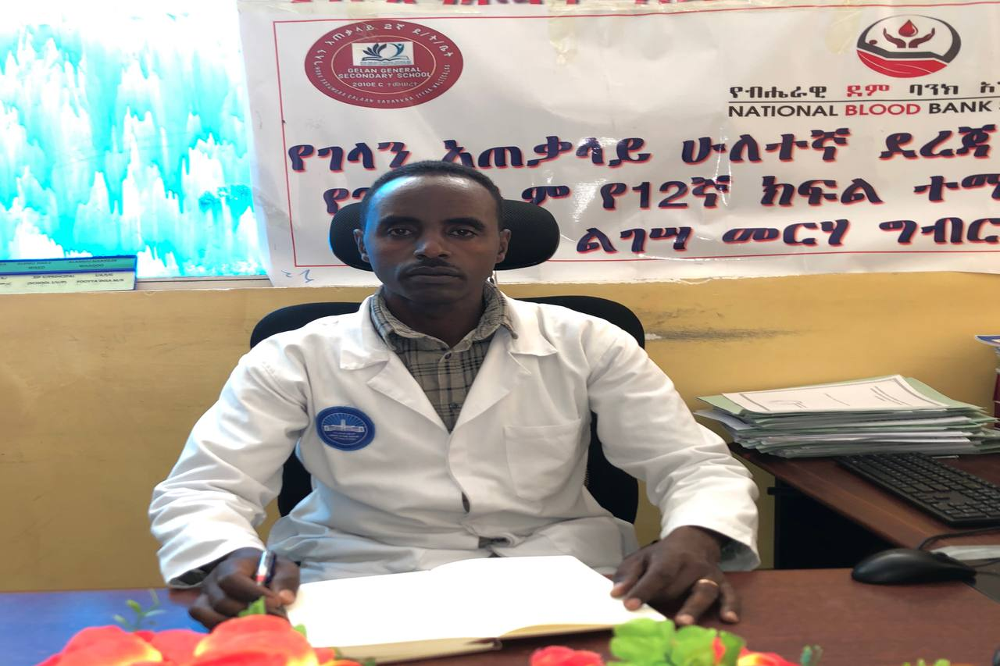
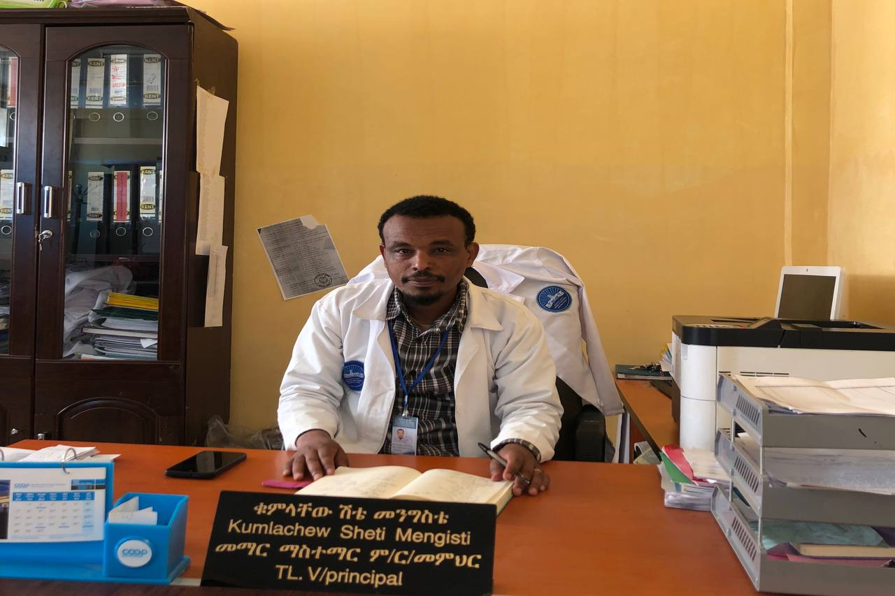
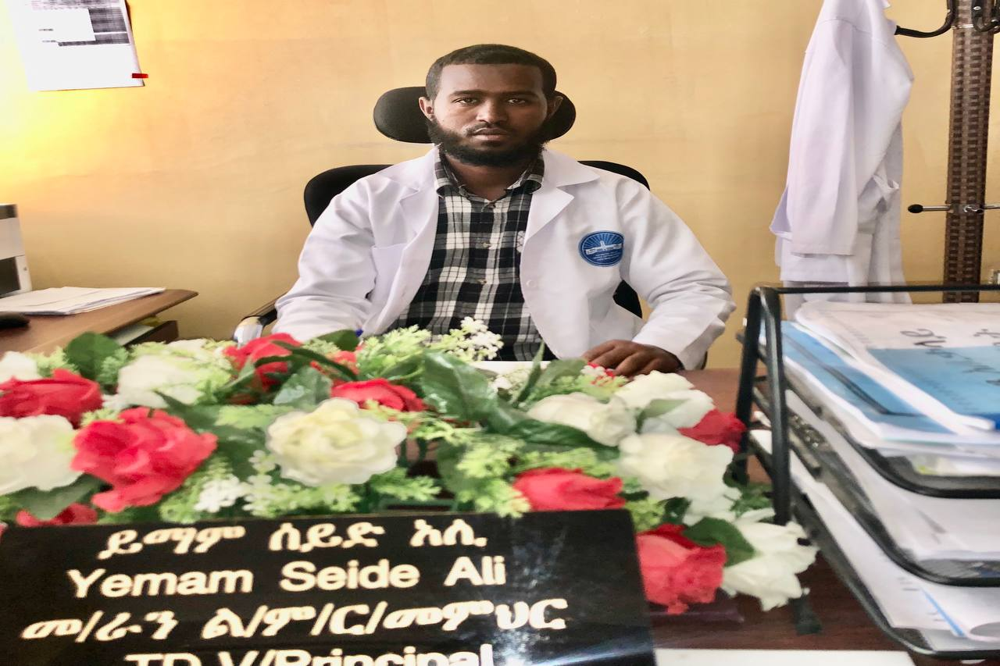

View Gallery
Discover our campus
Academic discourse is important because it allows experts to talk about their fields of study effectively...
High school football fosters athletic development, school spirit, and community engagement...
Integrating innovation into high school education sparks creativity, critical thinking...

Gelan General Secondary School consistently demonstrates academic excellence...
2025 E.C

Gelan General Secondary School
The Principal is the highest-ranking administrator in a school and is responsible for overseeing all aspects of its operation...
More
Gelan General Secondary School
This position typically focuses on curriculum development, instructional leadership, and student achievement. Responsibilities may include supervising and evaluating teachers, designing and implementing curriculum initiatives, analyzing student data to inform instructional practices, coordinating standardized testing and assessment programs, and supporting teachers in their professional growth and development. The vice principal of teaching and learning plays a crucial role in ensuring that high-quality instruction is delivered consistently across all classrooms and that students are making progress toward academic goals...
More
Gelan General Secondary School
This role is often dedicated to leading efforts to improve the overall quality and performance of the school. Responsibilities may include analyzing school data to identify strengths and areas for growth, developing and implementing school improvement plans, monitoring progress toward goals, coordinating professional development for staff, fostering a positive school culture, and engaging with stakeholders to build support for improvement initiatives. The vice principal of school improvement works collaboratively with the principal and other administrators to drive positive change and enhance the educational experience for students...
More
Gelan General Secondary School
This position typically combines responsibilities related to both teacher development and school administration. On the teacher development side, the vice principal may oversee professional development programs, mentor new teachers, facilitate collaboration among instructional staff, and provide support and resources to enhance teaching effectiveness. On the school administration side, responsibilities may include managing school schedules and resources, handling disciplinary issues, liaising with parents and community members, and assisting with day-to-day operational tasks. The goal of this role is to support both the professional growth of teachers and the smooth functioning of the school as a whole...
MoreOur educational institution offers innovative learning environments for student success.
Discover our campus
Our curriculum development focuses on 21st century skills and student-centered learning.